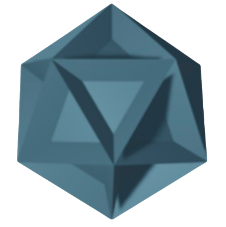
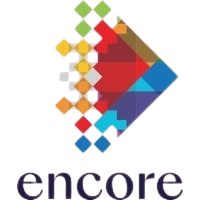

> Built end-to-end IaC internal pipeline on Kubernetes/OpenShift with Grafana and Prometheus monitoring.
> Supporting cloud-based workflows and orchestration across modern warehouse and analytics infrastructure.

> Built end-to-end IaC internal pipeline on Kubernetes/OpenShift with Grafana and Prometheus monitoring.
> Supporting cloud-based workflows and orchestration across modern warehouse and analytics infrastructure.
> Worked on 'Uncertainty-Annotated Databases', light-weight, and practical techniques for dealing with uncertainty that naturally arises in datasets (e.g. data entry errors, sensor errors, noise, ambiguity etc...).
> Built C-extension for Postgres, supporting standard relational algebra, comparison, arithmetic, and aggregate operators.
> Implemented batch PySpark pipelines. Developed targeted queries surfacing patterns in digital wallet fraud.
> Won 1st in company-wide AWS hackathon using AWS lambda, ECS, S3, Step Function, Docker and Python

> item Conducted research on neural networks, machine learning, and data preprocessing techniques, applying theoretical concepts to practical modeling tasks.
> item Developed and trained a chess-playing neural network using PyTorch, Pandas, and NumPy; cleaned and transformed game datasets to support model training and evaluation.
> Developed a DOM-based web scraping pipeline to collect and process university course data, supporting academic planning for 33,000+ students across the University of Illinois System.
> Designed and implemented a prerequisite dependency graph (DAG) covering 7,500+ courses, enabling course-sequencing analysis and schedule optimization.

Building an HTTP/1.1 web server from scratch in modern C++, progressing from a single-threaded "hello world" server to a multithreaded server with persistence and middleware.
Covers TCP socket handling, request parsing and routing, static file serving, thread-pool concurrency, SQLite persistence, and benchmarking across versions.

Implemented distributed leader election using the bully algorithm and a parallelized version of Dijkstra's algorithm with MPI.
Built a pipeline to generate, partition, and process distributed graph nodes in C++17, Python, and OpenMPI.
Developed a local AI study assistant that ingests course documents into a persistent, hybrid-retrieval index combining lexical BM25 and semantic ranking.
Grounds and cites LLM responses directly in a student's own course materials.
Created a 3-node distributed electrical/power grid simulator using Arduino Uno R3 boards communicating over serial.
Implemented load balancing and shedding logic, simulated random grid events, and built an end-user hardware interface.
Built a standard-library Go and Cobra CLI utility for quickly surfacing an overview of unfamiliar directories.
Used concurrent goroutines, channels, and semaphores to reduce search time without sacrificing memory.
 Email
GitHub
Email
GitHub
 LinkedIn
LinkedIn